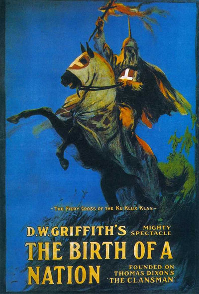

Суггестия — везде!
Теперь перейдем к разбору «как все это работает». Слишком многие в упор не видят глубже маскировочных смысловых слоев, причем с интеллектом у них вроде бы все нормально. Что и указывает на то, насколько эффективная суггестия фильма.
Запомните: не существует и не может существовать культурного феномена, который не нес бы суггестию. Каждый чему-то учит. Даже «искусство ради искусства» учит тому, что объявить искусством любую фигню — можно и выгодно. Ни литература, ни кино без идеологии невозможны!
Другой вопрос — насколько это сильно проявляется и как глубоко замаскировано.
Свежий пример — сериал «Школа», который я видел минут десять (больше не выдержал), но осуждаю так, как будто просмотрел целиком.
Смотреть там полностью хотя бы серию смысла нет — обыкновенная псевдодокументальная чернуха, которую просто обожали снимать в перестроечные времена.
Дело не в том, что так называемые актеры играют на уровне школьного кружка самодеятельности в школе для умственно отсталых и эмоционально калечных. Просто противно то, что там называют сюжетом. Да, такое бывает — но не в одном месте и не подряд.
А ведь это не хухры-мухры, а Первый канал!
При этом его глава Эрнст не раз позиционировал себя чуть ли не пуританином, показательно блюдя нравственность телезрителей. Первый канал зануден, официозен и вообще не помню, чтобы по нему хоть когда-то шло что-либо интересное (впрочем, телевизор я не смотрю). Но чтобы в эфир пошел такой откровенный thrash, причем во вполне себе в prime time?!
Это «ж-ж-ж» неспроста, как говаривал дзен-мастер В. Пух.
В данном случае ничего и не скрывается, «Newsweek» недавно писал, что «Школа» — это часть общего проекта по привлечению молодежной аудитории на Первый канал. Успешно: еще не было проекта на этом канале, который так бурно обсуждался бы в интернете.
Так что «Школа» — это не блажь отдельных телевизионщиков и не показатель суперталантливости режиссерши (это даже не смешно). Просто Первый канал вещает, так сказать, «политику партии» — и на него переманивают молодежь. В перерывах между «Школами», «Комеди Клабами», «Большими разницами» и прочим — будут смотреть не просто развлекательное, но и нужное.
А то, что смотреть будут невнимательно — это даже лучше, так как сознание-то может и отфильтровать информацию, а вот услышанное мимоходом и отрывочно анализироваться не будет. Если при этом это нужное повторяется многократно и в разных вариациях — то оно и будет фиксироваться как норма.
Уже сейчас попадаются высказывания «да-да, в школах все именно так!». А когда прижимают к стенке за вранье, то заявляют — мол, не все одновременно, но бывает же, значит, в сериале — правда жизни! Ну а раз правда, то такое, возможно, и не нравится, но тем не менее — НОРМА. Куда деваться-то, жисть такая беспросветная...
Упрощенно: если в фильмах, книгах и т.д. наркотики употребляют только преступники, то в подсознании будет закрепляться ассоциация «наркотики — это преступно». А если показывать фильмы, где школьники запросто закидываются коксом, шмалят косяки и катают колеса — то даже если герои будут отрицательными, то все равно будет закрепляться «в школе это можно». А кто в подростковом возрасте не хотел почувствовать себя «плохим и крутым»? Далее, думаю, понятно.
Возьмем еще наглядный пример. Помните фильм «Миссисипи в огне»?
Напоминаю сюжет, рецензия wind_lj:
***
Два этнических антифашиста и негр в 60-е годы приезжают в штат Миссисипи бороться за общечеловеческие ценности и права негров. Полицейские расисты обзывают их «жидовскими мордами» и пристреливают. Местная полиция — архетипические расисты-ксенофобы ярко выраженной североевропеоидной внешности, а один — так просто ночной кошмар антифашиста: ксенофоб-здоровяк с широкой челюстью. В телеинтервью полицейские откровенно глумятся над усопшими правозащитниками и говорят о «Мартине Лютере Черномазом». Местные белые провинциалы-«реднеки» — как говорят у нас, «бытовые кухонные ксенофобы». Негров не линчуют, но в кафе и парикмахерской ворчат, что нечего им права раздавать. Тем временем дело об убийстве «берут на личный контролью, и из Вашингтона прибывают агенты ФБР — молодой идейный антифа и карьерист в годах. Когда идейный антифа присаживается за стол с неграми, белые пенсионеры смотрят на него как на общественно опасного олигофрена. На шествие за права негров горожане смотрят как на парад неприкасаемых. А ведь среди горожан наверняка есть ветераны 2-й мировой — странно, что молодой ФБРовец не завопил: «За что деды вы воевали?»™
Белые расисты на фоне трудолюбивых безобидных негров — изверги в человеческом обличье. Подобному тому, как россиянская пресса замалчивает этнопреступность, но раздувает любое нападение скинхедов, в фильме негры — трудолюбивые безобидные миляги, жертвы расистского произвола. Не ограбят, не убьют, не изнасилуют. А расистский террор изображен так, чтобы вызвать отторжение даже у латентного ксенофоба — расисты сжигают ферму негра вместе с бедными коровами и просто так наносят неграм кошмарные увечья. Карьерист вспоминает историю, как его отец «завидовал успешному негру» (это в США в начале 20 века-то!!! успешный негр!) — в общем, «вы им просто завидуете, они трудолюбивые, а вы пьете водку виски и ругаете инородцев»™.
Штат настолько ксенофобский, что идейный антифа, пытающийся действовать по закону, не добивается абсолютно ничего. Судья, наконец, дает расистам-погромщикам 5 лет... но обвиняет ФБРовцев в «дестабилизации» и откладывает исполнение приговора на неопределенный срок. Короче — «фашисты убивают, власти покрывают!!!»™
В итоге ФБРовец-карьерист незаконными методами (положительный антифашистский герой такой, да) — угрозами, обманами, пытками и запудриванием мозга (или что там у нее под этим названием) жене полицейского расиста находит расистов-убийц. При этом крепкие полицейские нацики с пистолетами на поясах жутко стремаются одного 50-летнего дядьки с пузом, раздающего им тумаки и царапающего их физии бритвой. В общем, «только и могут толпой бить беззащитного негра»™. Жена полицейского расиста раскаивается в историческом угнетении негров и готова платить им компенсации.
В итоге расисты-убийцы осуждены на сроки 6-10 лет (это за убийство двух и более лиц группой по мотивам ненависти!) — опять «фашисты убивают, власти покрывают»™ и т.д. и т.п. — на дворе еще эпоха белой консервативной Америки.
А теперь главное: расистов-полицейских посадили не негры. Расовые законы отменили не негры. Ясно и четко видно, что без помощи режима и абсолютно белых ФБРовцев (бросая за решетку братьев по крови, они просто «выполняли приказ») цветные не добились бы ничего. Вообще ничего. Это к вопросу о том, где корень проблем.
И местный политик-расист, выступая перед народом на митинге с речью о белой христианской Америке и заявляющий, что «на юге негры никогда не смогут чувствовать себя хозяевами, как на севере, где они уже заселили целые черные кварталы» — он, конечно, «отрицательный персонаж», но таким ли отрицательным он покажется современным белым американцам и европейцам, видящим, во что превращаются некогда белые города и страны — каким стал мир, где победили «положительные герои».
***
Думаю, понятно, на какие сдвиги в массовом сознании работает фильм. Как думаете, сейчас в Америке разрешили бы снять ремейк культового фильма 1915 года «Рождение нации»? А что — собрал в прокате больше десяти миллионов долларов (а тогдашние доллары были куда весомее) при затратах на съемки $110.000. Но — не переснимут. Там, понимаете ли, негры неполиткорректно показаны.
Или вот, еще антирасистский фильм — «Время убивать» 1996 года. Еще рецензия от wind_lj:
***
Кратко сюжет: в штате Миссисипи (да что же они так пристали к этому штату?!), представьте себе, в 90-е годы двое белых обрыганов-педофилов-садистов зверски насилуют черную девочку 10 лет. Блин, это ведь так часто в Америке — белая шпана насилует черную девочку, а не наоборот, да?
Негры — разумеется, благообразные трудолюбивые честные труженики. Банд не сколачивают, наркотиками не торгуют, не грабят, пособий и льгот не клянчат. Негритянские районы — не Гарлем и не Бронкс, а оазисы рабоче-крестьянского трудолюбия и добродетелей. Не особо хороший только один негроперсонаж — ну так он своего негра обдурить пытался.
Отец девочки берет М-16 и в зале суда расстреливает насильников, попутно ранив в колено белого конвоира (несчастному ампутируют полноги). А почему? Потому что за несколько лет до этого белые уже изнасиловали черную девочку (ну что за «эпидемия» такая! опять белые — черную девочку, а не наоборот), а их отпустили! И никак иначе, кроме как с М-16, негру справедливости не добиться. Это в 90-е политкорректные годы-то!
Белые присяжные и белый судья настроены против негра, ему светит смертная казнь, потому что они все расисты и предубеждены против негра. Но белый адвокат с белой помощницей вызываются спасти мстителя. Диссиденты прямо. Негр-мститель мало того, что почти не платит адвокату, так еще и чмырит его за недостаточную любовь к неграм: «Ты белый, и твои дети не играли с моими, мы — разные, ты меня никогда не поймешь!».
В городе активизируется ККК (несколько десятков — блекло на фоне прошлого масштаба), полицейский — брат убитого насильника (опять полицейские-расисты!) —вступает в клан и собирает соратников. Клановцы терроризируют защитников негров, сжигают их дома и всячески запугивают. Клановцы собирают у суда митинги и дерутся с неграми (драться в их балахонах — гиблое дело), и как-то мельком проходит, как «хороший негр» кидает в клановца бутылку с зажигательной смесью и сжигает его заживо — ну, убили, и убили. Никакого резонанса, возмущения и расследования. По-антифашистски так, по-общечеловечески.
Белый адвокат спасает негра финальной речью — описывает, как преступники истязали маленькую девочку. «Закройте глаза, представьте... *истязания*» — присяжные уже плачут. И в конце: «Представьте, что она белая». Мол, проклятые расисты, вам наплевать на негров, а представьте, что она белая! И негр оправдан. Happy end.
А вы тоже представьте. Представьте американское кино под названием «Время убивать». Но в этом кино белый мститель расстреливает негров-насильников, и через весь фильм проходит линия «в этом политкорректном обществе белому против черного не добиться правды!», белые активисты митингуют в поддержку мстителя, а «черные пантеры» выгораживают своих. И представьте вой и гевалт вокруг такого фильма. Но Америка уже не та, и его вряд ли снимут (если снимут, то нечто подпольное низкобюджетное). И белые американцы пусть винят в этом не цветных, а свое дорогое правительство и белых чиновников (см. выше), «выполнявших приказ».
***
Сейчас во множестве американских боевиков, особенно про копов, имеем штамп: напарников в черно/белом варианте.
Сюжет здесь не имеет значения, суггестия в том, что «негр — друг человека». Даже если они вместе отлавливают «плохих негров» по сюжету. Суггестия — именно что «негры бывают и преступниками, но и белые тоже; а вообще с неграми нормально дружить» и т.п.
И тут важно отличие сознательного от бессознательного.
На сознательном уровне любой разумный согласится — да, с некоторыми неграми можно и дружить, наверное. Но это исключение, а в общем-то апартеид — очень разумное социальное устройство (на всякий случай: апартеид подразумевает разделение по расам, а не угнетение одной расы другой; сравните, как жилось в ЮАР при апартеиде и сейчас, также нагляден пример Зимбабве — бывшей Родезии).
А вот суггестия — она не предназначена для анализа, она напрямую в подсознательное идет. Зритель видит, как дружат белый с негром и т.д. и т.п., и это воспринимается как правильное поведение — так как главные герои, все время на виду и т.п., а негры-преступники эпизодичны, да и белых преступников полно. Так и насаждается новая норма.
Почему пропаганда толерантной семьи визуально выглядит в подавляющем большинстве случаев именно как «белый мужчина и черная женщина»? Потому, что мужчины более логичны, а женщины более поддаются чувствам — и пропаганда «это норма» направлена именно на них. Несколько раз видел в интернете обсуждение «белая вышла замуж за негра», не говоря уж о «замуж за кавказца», и аргументы «это же любовь, поэтому все равно!» идет именно от женщин (радует, что далеко не от всех). Кстати, в «Аватаре» — тоже ведь любовь, так ведь?
Примечание: разумеется, не каждый фильм содержит суггестию такой значимости, о которой стоит говорить. Но не бывает фильма (или книги) вообще без воздействия на зрителя!